All Sites and Monuments
25
Tomb of Hazrat Eishan
Khwaja Mehmud (also known as Hazrat Eishan) was a Sufi religious leader from Bukhara who moved to Lahore during the reign of Shah Jahan. He was a contemporary with Hazrat Mian Mir and was also noted as a great scholar and physician.
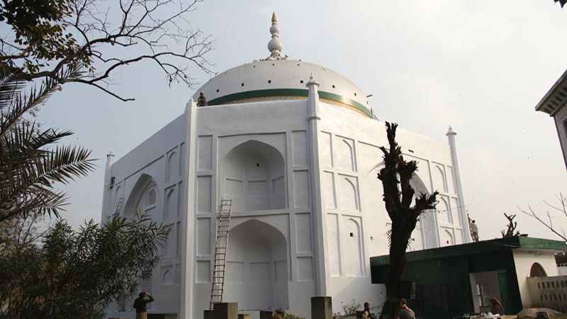
Hours: Mon to Sun: 8:00 am – 8:00 pm
26
Tomb of Muhammad Saleh Kamboh
Mullah Muhammad Saleh Kamboh and Inayat Ullah Kamboh, were among the most scholarly and learned people of the Shah Jahan era. Inayatullah Kamboh also served as munshi (writer) at the Mughal court. Historians vary in their description of their relationship with each other.
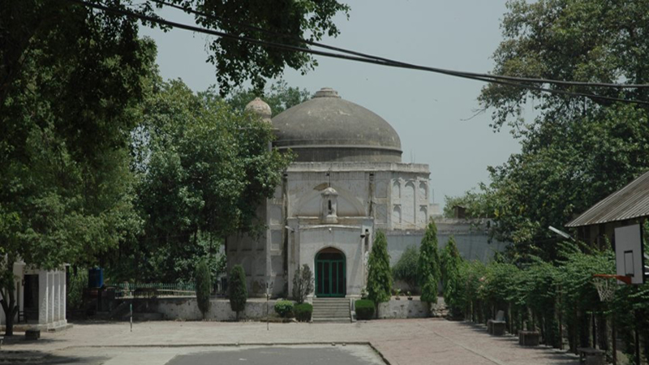
Hours: Mon to Sun: 8:00 am – 8:00 pm
27
Mai Dai Tomb
The so-called "Mai Dai" tomb is located in an alley off the beaten path in the Kot Khwaja Saeed neighborhood of Lahore. In urdu, "Mai" and "Dai" are words that both mean "Respected Lady" and are polite titles used to refer to women.
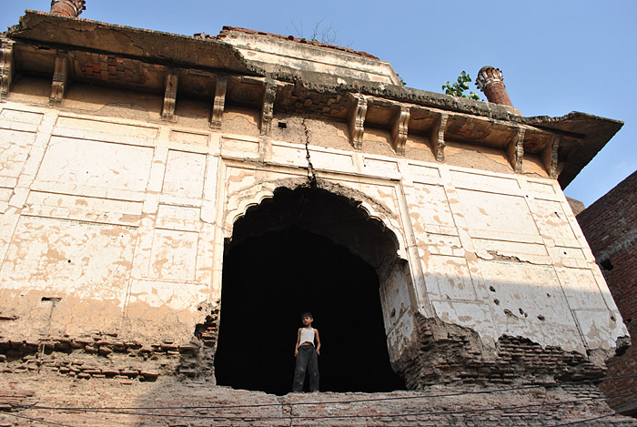
Hours: Mon to Sun: 8:00 am – 8:00 pm
28
Mariam Zamani Mosque
The Maryam Zamani Mosque is named after Queen Maryam Zamani, the wife of Emperor Akbar. It is the earliest surviving Mughal mosque in Lahore and is the first to exhibit the five-bay facade
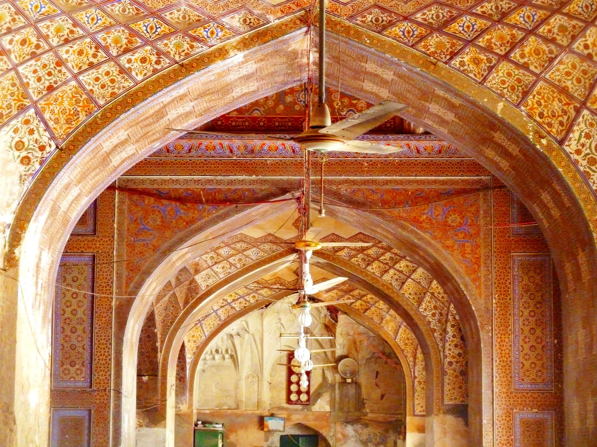
Hours: Mon to Sun: 8:00 am – 8:00 pm
29
Mian Khan Tomb
This is the tomb of Nawab Mian Khan, the son of Nawab Saadullah Khan who served as Prime Minister during the reign of Shah Jahan. It is built in the form of a baradari (literally, 'twelve doors') with a tripartite facade on four sides.
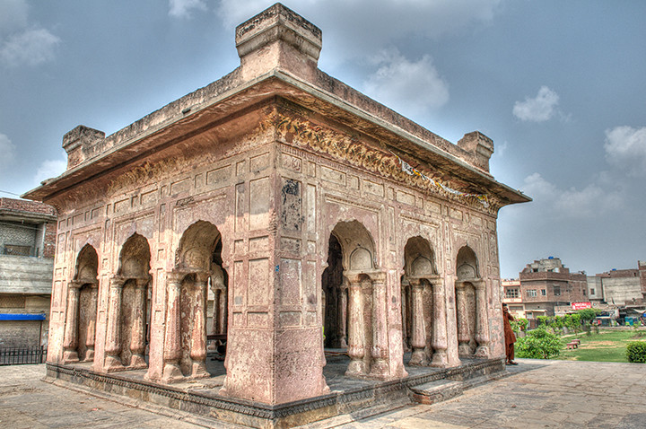
Hours: Mon to Sun: 8:00 am – 8:00 pm
30
Nadira Begum Tomb
Nadira Begum was the wife of Dara Shikoh, the eldest son of Shah Jahan and heir-apparent to his throne. In 1657 a power struggle broke out between Dara Shikoh and his three brothers over succession to the throne after Shah Jahan fell ill.
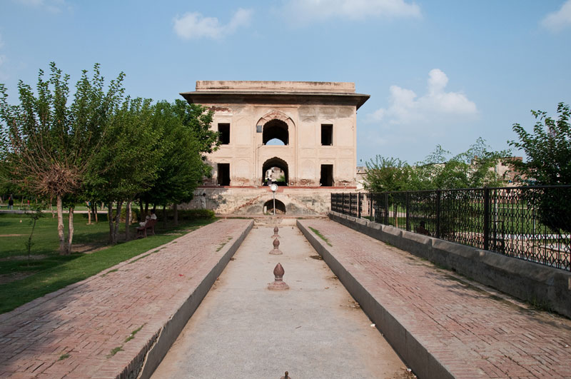
Hours: Mon to Sun: 8:00 am – 8:00 pm
31
Nau Nihal Singh Haveli
The word "Haveli" is used to refer to mansions in India and Pakistan. The word is derived from the Persian word "hawli", meaning "an enclosed place". Havelis typically were built by wealthy aristocrats to house themselves and their extended families.
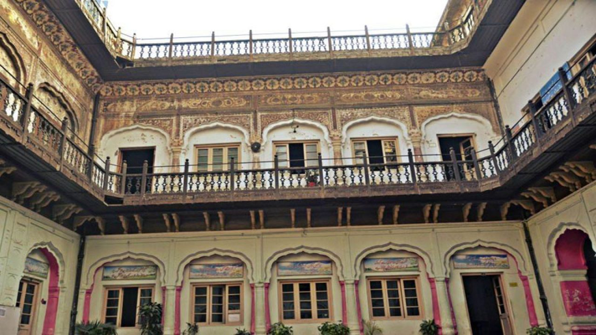
Hours: Mon to Sun: 8:00 am – 8:00 pm
32
Nawankot Monuments
The so-called Nawankot Monuments are the remains of the eastern wall of the tomb garden of Zeb-un-Nisa, comprising two corner turrets and the east gate. The ensemble is difficult to distinguish in the crowded district
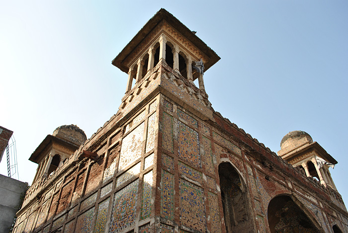
Hours: Mon to Sun: 8:00 am – 8:00 pm
33
Neela Gumbad Mausoleum
Neela (or Nila) Gumbad means blue dome in Urdu. It is located in Anarkali, a famous shopping district in Lahore. Ironically, while the monument was once so renowned that the surrounding area became known by the same name
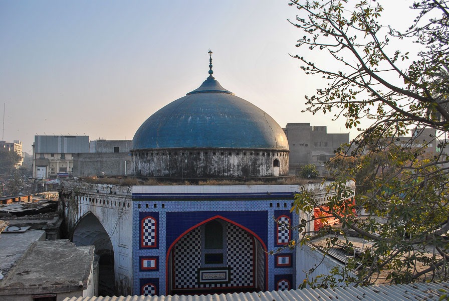
Hours: Mon to Sun: 8:00 am – 8:00 pm
34
Nur Jahan Tomb
Nur Jahan was the daughter of I'timad-ud-Daula, Jahangir's prime minister. Meaning "Light of the World", she was born in 1577 to Persian parents and was given the name Mehr-un-Nisaa.
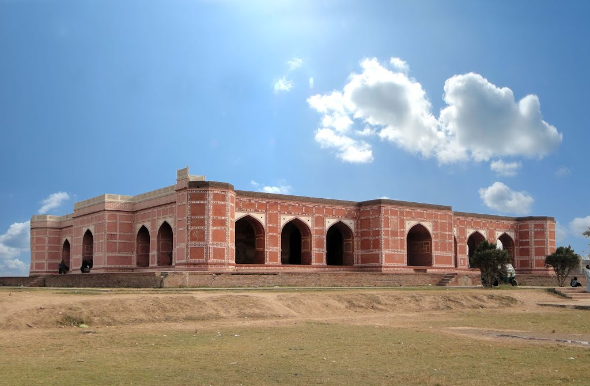
Hours: Mon to Sun: 8:00 am – 8:00 pm
35
Nusrat Khan Tomb
Nusrat Khan was a courtier who lived in the era of Shah Jahan. His tomb stands near the center of a large tract of land owned by Pakistan Railways and is impossible to access without security clearance.
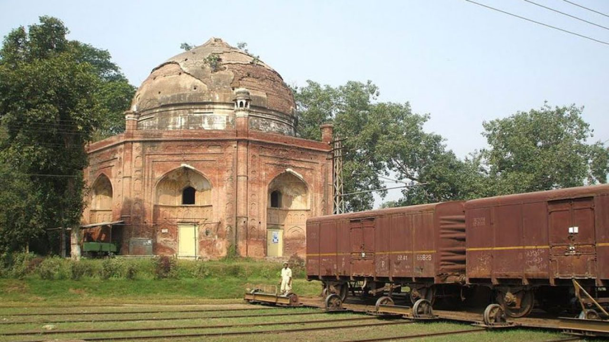
Hours: Mon to Sun: 8:00 am – 8:00 pm
36
Tomb of Zaib Un Nisa
There are graves of unknown persons in the tomb but popularly associated with princess Zaib-un-Nisa, the eldest and most celebrated daughter of the 6th Mughal Emperor, Aurangzeb. It is also said that this tomb was built by her in 1669 A.D. in the midst of a beautiful garden.
Hours: Mon to Sun: 8:00 am – 8:00 pm
37
Sunehri Masjid
The Sunehri Masjid is a relative latecomer to Lahore's traditional cityscape, having been built in 1753 during the waning years of the Mughal empire by Nawab Bhikari Khan, the Deputy of Lahore during the tenure of Governor Mir Mu'in al-Mulk Mir Munoo.
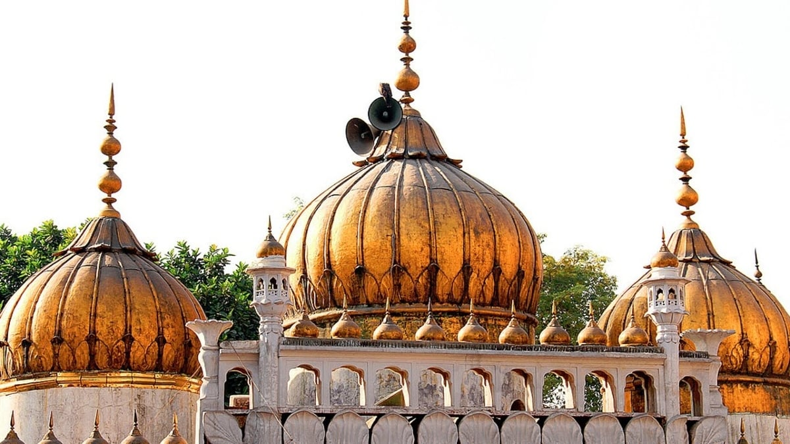
Hours: Mon to Sun: 8:00 am – 8:00 pm
38
Wazir Khan Baradari
This baradari (literally, 12-door pavilion) originally served as the centerpiece of the Nakhlia Garden built by Wazir Khan, a benefactor of numerous buildings throughout Lahore including the mosque and hammam (bath house) which bear his name.
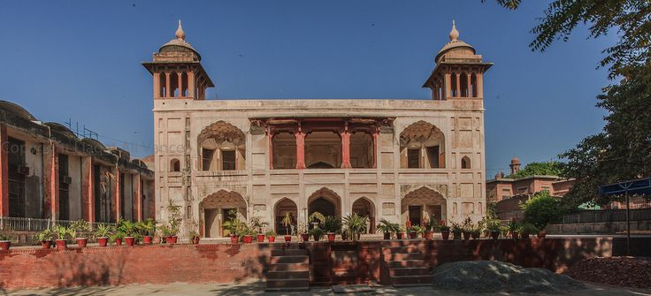
Hours: Mon to Sun: 8:00 am – 8:00 pm
39
Oonchi Masjid
The Oonchi Mosque, or Oonchi Masjid is a Mughal-era mosque located along the Hakiman Bazaar, near the Bhati Gate which leads into the Walled City of Lahore, in Pakistan. The mosque may date from the reign of the Emperor Akbar.
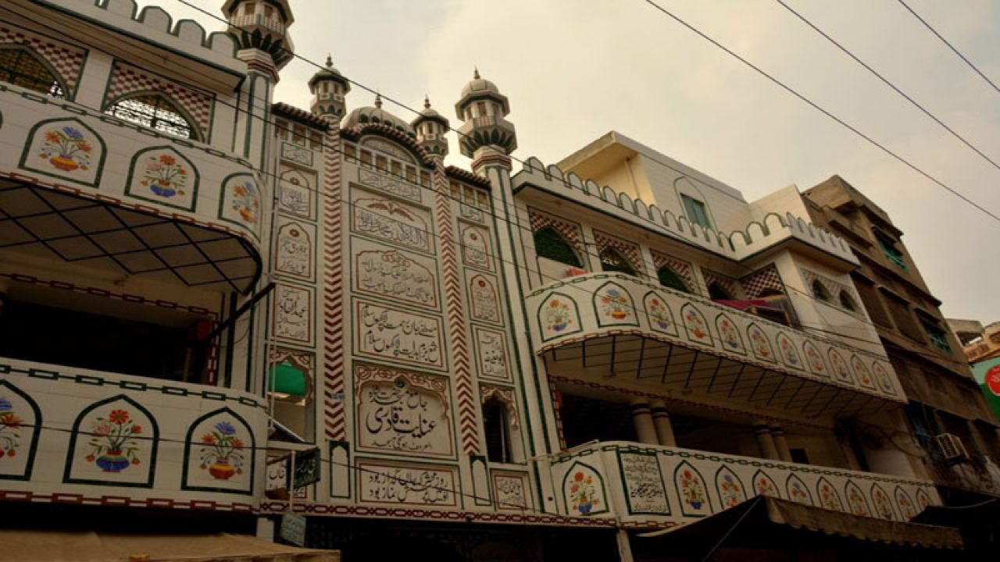
Hours: Mon to Sun: 8:00 am – 8:00 pm
40
Tomb of Asif Jah
The Tomb of Asif Jah (also known as Asif Khan) is a 17th-century mausoleum located in Shahdara Bagh, in the city of Lahore, Punjab. It was built for the Mughal statesman Mirza Abul Hassan Jah, who was titled Asif Khan. Asif Khan was brother of Nur Jahan, and brother-in-law to the Mughal Emperor Jahangir.
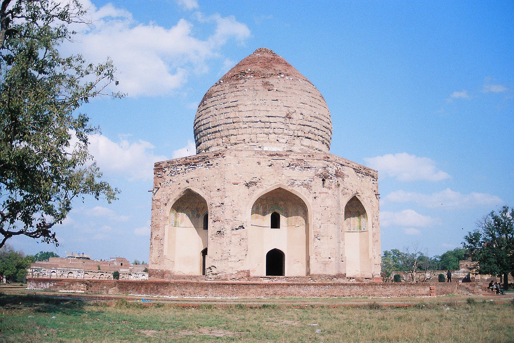
Hours: Mon to Sun: 8:00 am – 8:00 pm
41
Tomb of Anarkali
Anarkali tomb is one of the earliest surviving and most significant buildings of the Mughal period. Not only a brilliantly structured octagonal building also it is a remarkable memorial of the love-legend about the Shahzadah Salim (later famous Mughal Emperor, Jahangir) and girl Anarkali (pomegranate kernel).
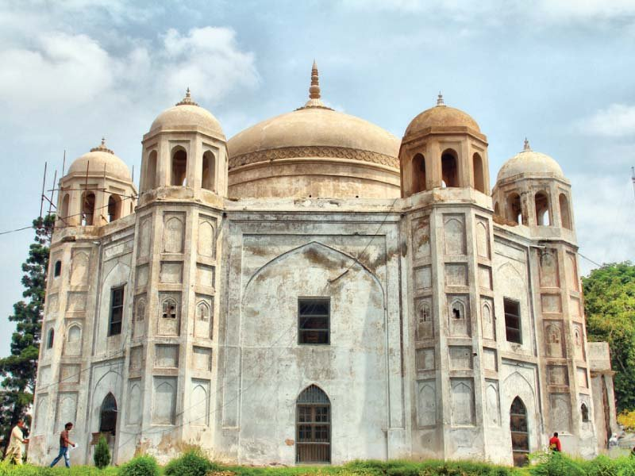
Hours: Mon to Sun: 8:00 am – 8:00 pm
42
Laal Haveli (Haveli of Mai Daru)
Lal Haveli is a residential structure that has best preserved cut and chased brick work with plaster moldings on a fair faced brick ground having exquisite wooden jharokas on the three principal floors. The brick work has been kept painted over the decades with a coat of hurmuchi, or red ochre paint, which gave the house its name.
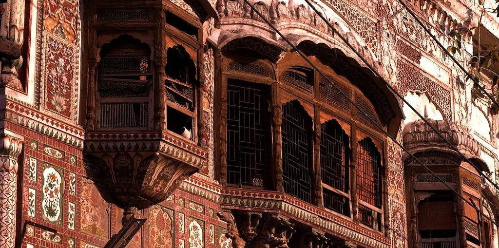
Hours: Mon to Sun: 8:00 am – 8:00 pm
Khwaja Mehmud Tomb
West of Begumpura and north of the University of Engineering the Technology (UET), you will come across a high dome –belonging to the shrine of Khawaja Mehmud, also known as Hazrat Eshan. You must be wondering who Khawaja Mehmud was, as not much is known about his Shrine.
As per historic references Khawaja Mehmud was a native of Bukhara and at the young age of 20, started his journey from his native town after receiving his education in the royal college and becoming a renowned scholar. During his journey, he made thousands of disciples in Herat, Kabul, and Kandahar and later; came to Kashmir in Mughal Emperor Akbar’s time, from where Emperor Jahangir took him to Agra.
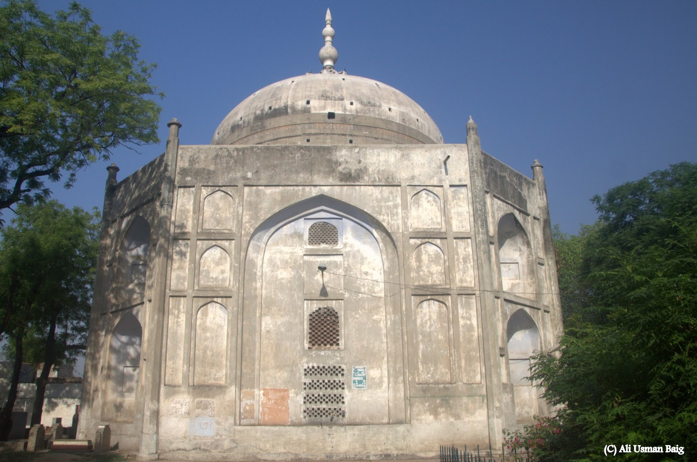
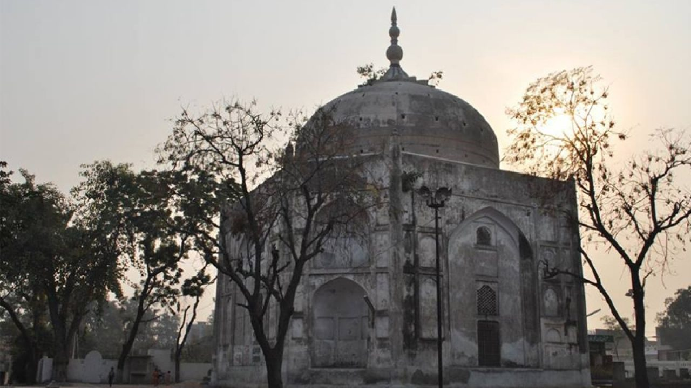
It is said that during Mughal Emperor Shah Jahan’s time, Khawaja Mehmud finally settled in Lahore. Historic references record that Khawaja Mehmud built his mausoleum in his own life time and after his demise in 1642 was buried there. Wazir Khan, the governor of Lahore under Emperor Shah Jahan who built the magnificent Shahi Hammam and Wazir Khan Mosque in the Walled City of Lahore, along with several other magnificent buildings, held Khawaja Mehmud in high esteem and would spend his own wealth for the upkeep of the Saint’s Shrine. During the reign of Nawab Zakariya Khan as viceroy of Lahore the mausoleum was at the pinnacle of its recognition and zenith.
It is an octagonal building surmounted by a high dome. The entrance is from the west and stairs provide access to the top of the building. Inside the tomb, in the center, there is a large platform upon which rests the grave of Khawaja Mehmud. Another grave in the northeast belongs to Baha-ud-Din, son of Khawaja Mehmud.
Kos Minar
The Kos Minar (Mile Pillars) are a series of milepost markers built during the reigns of Sher Shah Suri and later Mughal emperors. They were originally spaced roughly every three kilometers over major highway routes, particularly the Grand Trunk Road which connected Peshawar in the west to Bengal in the east (a span of over 3,000 kilometers).
As the Kos Minars are utilitarian in design, they were not regarded as architecturally significant. Most of them have been torn down, dismantled for their bricks, or otherwise demolished. Only a handful remain in the Lahore area, including the Kos Minar shown here.
The Kos Minar is a solid round pillar that stands on a masonry platform built with bricks and plastered over with lime. Kos Minars became an institution during the rule of the Mughals that after Akbar, emperor Jehangir and Shah Jahan, both added to the existing network of Kos Minars. In the north they were extended as far as Peshawar and in the east to Bengal via Kanauj. The geographic span makes for nearly three thousand kilometers of Mughal highways, accounting for nearly 1000 Kos Minars, i.e., 1 every Kos or 3 km. there is no record as to how many of them have survived since then. The Kos Minars are never looked at as architecturally impressive structures. It is only when we view them in the totality of a much larger design that their real significance emerges.
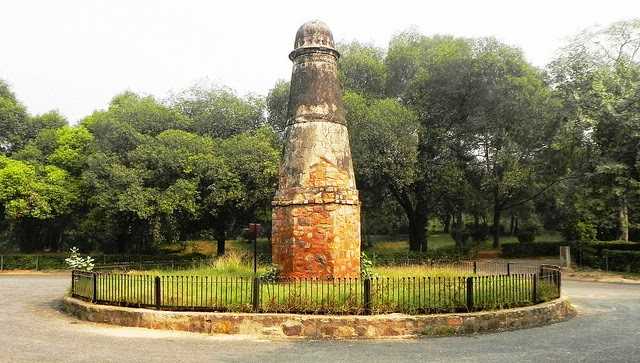
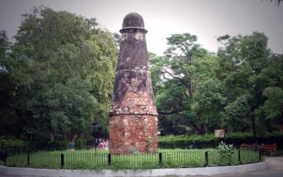
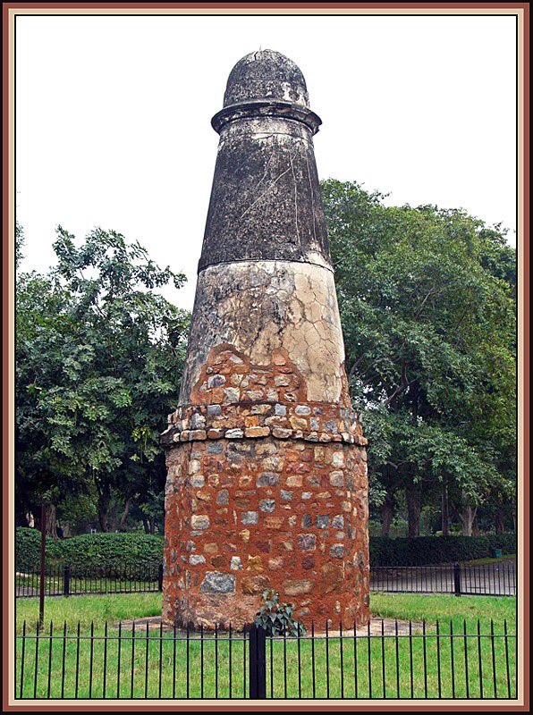
The Kos Minars are the milestones made by the Mughal emperors between 1556 to 1707 AD. "Kos" literally means a medieval measurement of distance denoting approximately 3 km and "Minar" is a Persian word for tower. The Kos Minars measure over 30 ft and were once erected by the Mughals marking their royal route from Agra to Ajmer via Jaipur in the west, from Agra to Lahore via Delhi in the north and from Agra to Mandu via Shivpuri in the south. Modern highways have come up much along the same route as the one delineated by the Kos Minars. Abul Fazl recorded in Akbar Nama that in the year 1575 AD, Akbar issued an order that at every Kos on the way from Agra to Ajmer, a pillar or a minar should be erected for the comfort of the travelers. So that the travelers who had lost their way might have a mark and a place to rest. It is believed that Akbar derived inspiration to build Kos Minars from his predecessor, Sher Shah, who built many roads and repaired and revived the ancient route of the Mauryas henceforth termed the Sher Shah Suri Marg or the Grad trunk Road.
This Kos Minar in Lahore is located in close proximity to Ali Mardan Khan's Tomb and probably lined the original G.T. Road, a few hundred meters north of it.
Lahore Fort: Akbari Gate
The Akbari Gate served as the main entrance to the fort during the Mughal era. It is physically less impressive than the Alamgiri gate which replaced its counterpart at the west side of the fort during the reign of Emperor Aurangzeb. The gate is also known as the Masti (Masjid) Darwaza after the Maryam Zamani Masjid adjacent to the fort. Its outer facade comprises a central arch flanked by two semi-octagonal bastions topped with a crenellated wall--the same overall design used at the Alamgiri gate, though less boldly ornamented.
The Mughal Emperor Akbar was the one who added a fortified wall with thirteen gates around the city and thus it became to be known as 'the walled city'. The gate is elevated from the ground level and wide enough for an elephant to cross its wide wooden door.
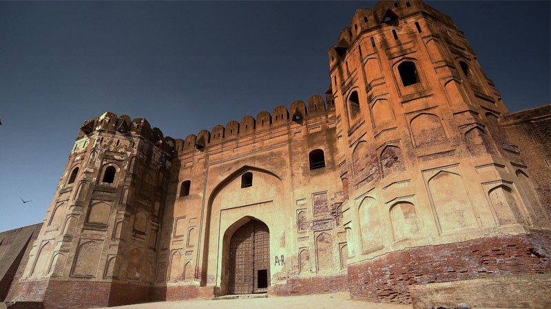
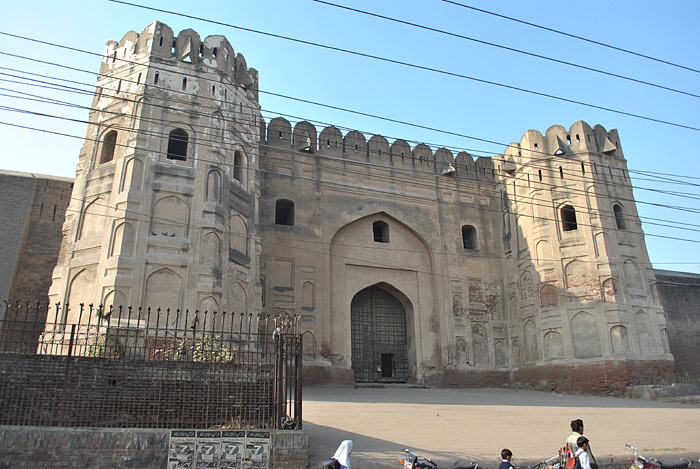
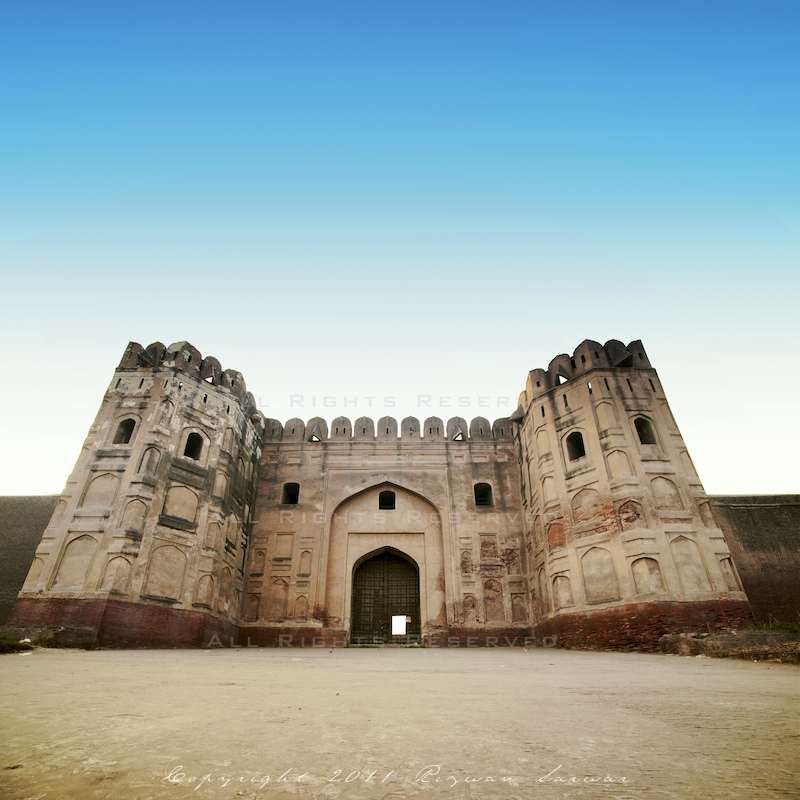
Going on the circular road, if you take a turn towards the Masti Gate and approach the Rim Market, just on the opposite side you will see a massive gate of the Lahore Fort, the Akbari Gate. This is the royal gate on the eastern side of the Lahore Fort which was built during the period of the third Mughal Emperor, Akbar the Great.
The gate was once the main entrance to the Lahore Fort but regrettably the main entrance has been changed now. The grandness of the gate echoes the majesty inside it. It is a huge structure of bricks and two storeys. There are rooms inside the gate which must have been used by the watch guards and other soldiers. The gate is elevated from the ground level and an elephant can cross its wide wooden door. The gate and its door is well intact till now but is not used by the public anymore.
Lahore Fort: Diwan i Amm Hall
The Diwan-i Amm Hall occupies a place of prominence within Lahore fort, sitting immediately to the south of the royal jharoka (royal audience dais) which had been in use since the reign of Jahangir. During that time it was customary for noblemen to take shelter within tents near the jharoka. Shah Jahan constructed the Diwan-i Amm hall as more permanent and aesthetically pleasing space for noblemen to gather.
The hall was destroyed by cannon fire in 1841 during the succession struggle following the deaths of Kharak Singh and his son Nau Nihal on the same day. The British reconstructed the pavilion in 1846 when they took control of Lahore.
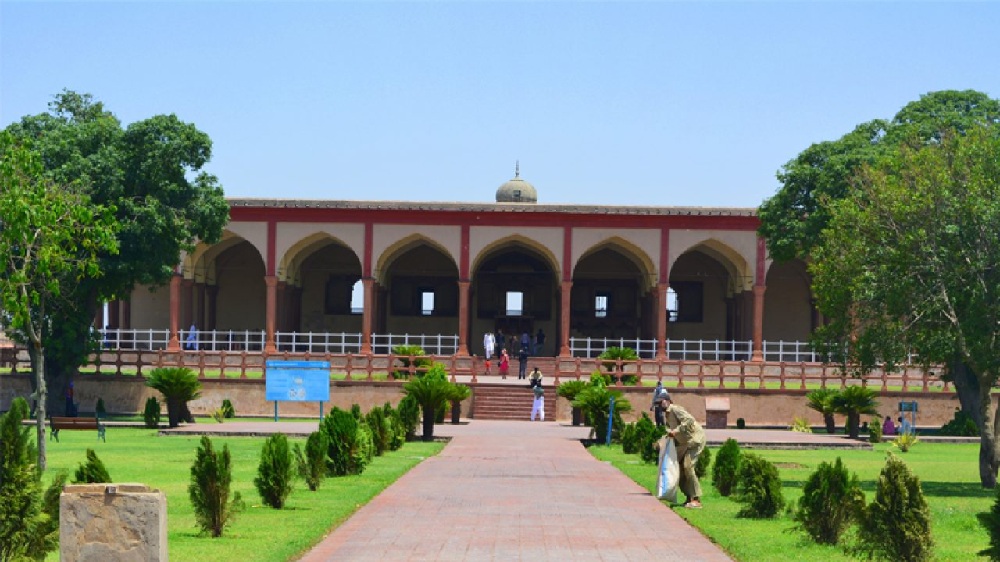
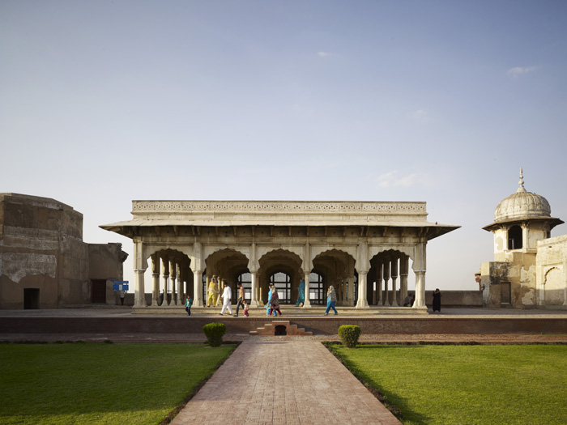
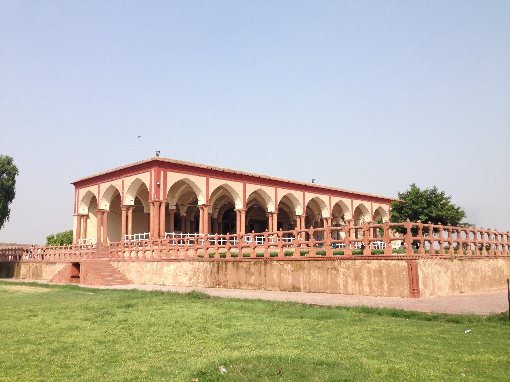
The Diwan-i-Amm, or 'hall of public audiences' is attached to Jahangir's palace in Lahore Fort. It includes an expansive court (730'X460') and a trabeate hall on its northern side. It is this hall that separates the row of private palace buildings from the more public functions of the Fort. The innermost row of rooms was built by Jahangir. Cloth canopies were set up in front of these rooms to shelter the courtiers, until a pillared hall, known as the Chehil Sutun, or forty-pillared audience hall, was added by Shah Jahan. Some later alterations were made under Sikh rule.
The façade of the Diwan is distinguished by the red sandstone brackets supporting the wide slanting chajja, or projecting eaves. The pillars are decorated with chevron designs on their shafts, and stalactite designs on their capitals, similar to their counterparts in the Diwan-i-Am of Agra, after which this one is modeled. The outer walls are arcaded, open to the court and to the outdoor gardens, and the back wall contains a balcony-throne from which the emperor granted audiences.
Mai Dai Tomb
The so-called "Mai Dai" tomb is located in an alley off the beaten path in the Kot Khwaja Saeed neighborhood of Lahore. In urdu, "Mai" and "Dai" are words that both mean "Respected Lady" and are polite titles used to refer to women. This oral tradition suggests the tomb is associated with a woman, but there is no definitive knowledge of who was buried here. It bears a strong resemblence to the nearby 'Cypress Tomb', which was built by a pious widow who wished to elevate her grave out of site of the public eye.
The tomb of Dai Anga features a gateway that predates the tomb's construction. Built in 1655 C.E. by the Persian nobleman Mirza Sultan Baig, the gateway was originally the entrance to a pleasure garden. The original garden was square in shape, and had measured 250 Guz on each side.
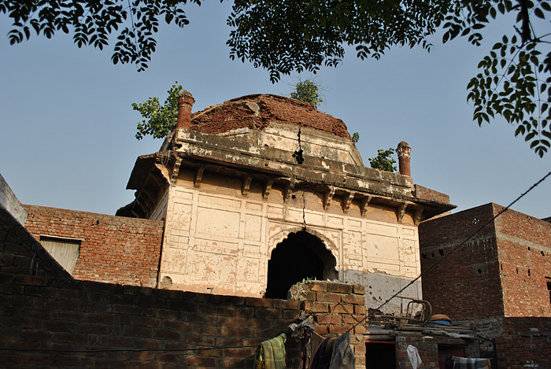
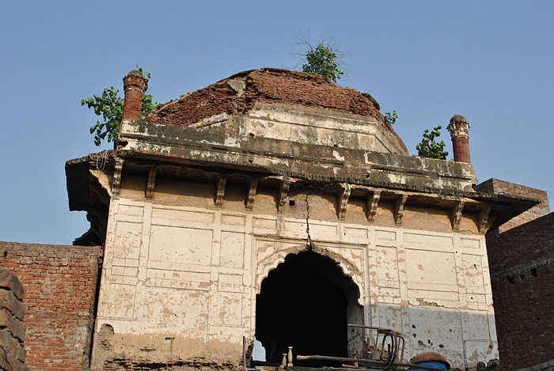
In 1671 C.E., the pleasure garden was repurposed into a tomb for the wet-nurse of the Mughal Emperor Shah Jahan, and wife to Murad Khan, magistrate of Bikaner under the Emperor Jehangir. A new mausoleum was constructed in the centre of the garden, which over the centuries has been encroached upon by neighbouring structures, with only a narrow strip of garden between the tomb and gateway remaining.
The mausoleum is rectangular in shape with eight rooms encircling the perimeter of a central chamber. The entire mausoleum is on a raised plinth. A dome with frescoes is directly above the central chamber. The chamber itself is empty, as the actual tomb of Dai Anga lies below in a subterranean crypt. She is buried next to her daughter Sultana Begum. Both cenotaphs have been removed, and the subterranean chamber is no longer accessible to the public.
The central change is richly decorated with carved inscriptions from the Quran, as well as elegant frescoes made by the renowned calligrapher Muhammad Saleh. The exterior of the tomb was also once covered in rich kashi kari, or Qashani tile-work, though much of the tiles have been lost through the centuries.
Maryam Zamani Mosque
The Maryam Zamani Mosque is named after Queen Maryam Zamani, the wife of Emperor Akbar. It is the earliest surviving Mughal mosque in Lahore and is the first to exhibit the five-bay facade that would become typical of nearly all future mosques built by the Mughals. It is a comparatively small structure, measuring just 50 meters east-west and 50 meters north-south. Often called Begum Shahi Masjid, the mosque stands just opposite the Masjidi Gate of the Lahore fort.
The Maryam Zamani Mosque is one of the oldest Mughal mosques in Lahore. It is named after Akbar’s wife Manmati, a Rajput who was known by the title of Maryam-i-Zamani; Mary of age. The mosque was built in 1611 opposite Masjidi Gate (populary known as Masti Gate) of Lahore Fort.
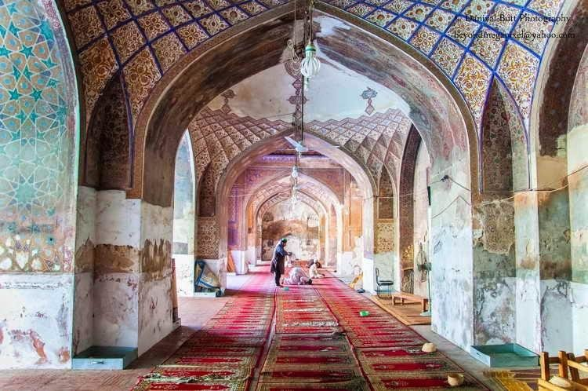
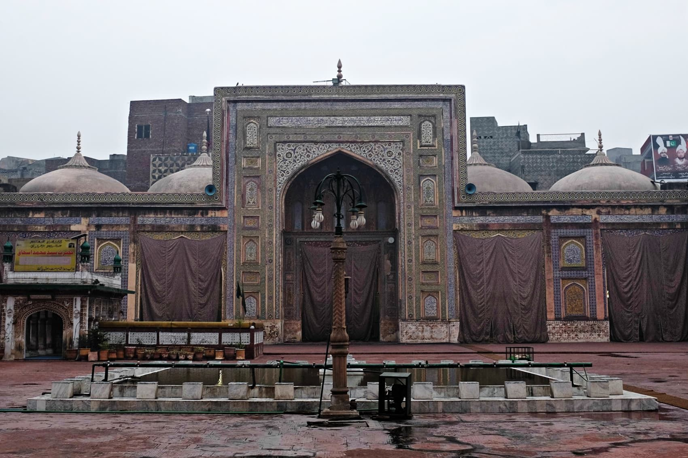
The mosque is in deep contrast to Badshahi mosque, which has been preserved well. It is much smaller, but has all the characteristics of Mughal grandeur which make them a lasting part of our heritage.
This mosque is one of the earliest mosques of Mughal era, constructed under the orders and royal patronage of Emperor Jahangir from 1611-1614 AD. The mosque is simple and graceful massive structure, richly decorated with fresco paintings in geometrical, floral and tendril designs. The main prayer chamber with its five arched openings, the central one as usual large framed and provided with a half dome, opened into a courtyard with an ablution tank in its center. The architectural plan and its decorative details especially its fresco paintings and calligraphy akes this mosque one of the more eminent Mughal monument.
Mian Khan Tomb
Nawab Mian Khan was the son of Nawab Saadullah Khan who was the Prime Minister of Lahore during the reign of Mughal Emperor Shah Jahan. Mian Saadullah Khan was an orphan whose inquisitiveness for learning led him to a local Madrassa in Walled City near Wazir Khan Mosque. Later he moved to Delhi and there with his intellect and oratorical skills he made his way into the court of Shah Jahan. Impressed by his grasp of knowledge, Shah Jahan offered him a job. It was because of Mian Saadullah Khan’s honesty and integrity in dealing with the Emperor’s finances that Shah Jahan bestowed upon him the title of “Allama Fihami Jumlatul Mulk”.
Then with a cash prize of Rs. 250,000, Shah Jahan sent him to Lahore as his Prime Minister. Saadullah Khan as Prime Minister built many important landmarks still existing in Lahore and Chiniot. These include Shahi Masjid of Chiniot, Haveli Mian Khan in Rang Mehal and Pathran Wali Haveli in Lahore.
It is widely believed that Aurangzeb was so impressed by Mian Saadullah Khan’s character that he asked his courtesans to try to be like him. Nawab Mian Khan following the footsteps of his father became an influential person of Lahore. Nawab Mian Khan also had his affiliations with Mughal Emperor Aurangzeb the successor of Shah Jahan and served as the Governor of Lahore during Aurangzeb’s rule. Nawab’s father served the Mughals well and was known as a loyal to the family and so was the Nawab himself. Main Khan died in 1671 during the reign of Mughal Emperor Aurangzeb.
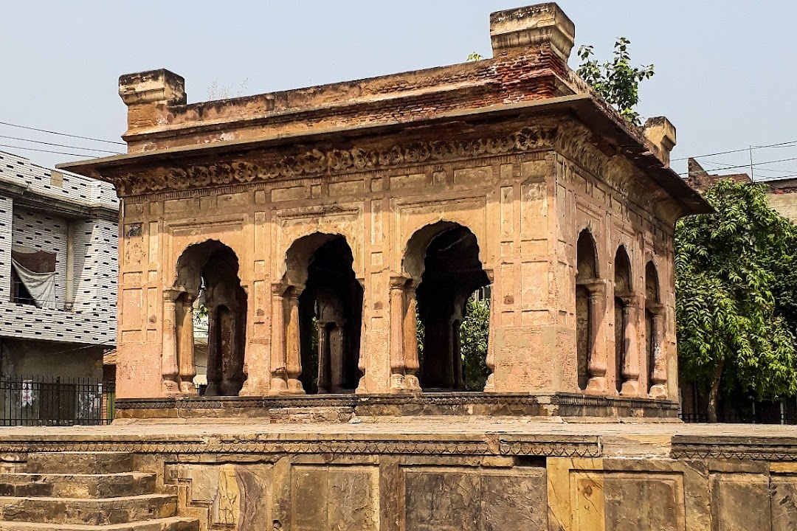
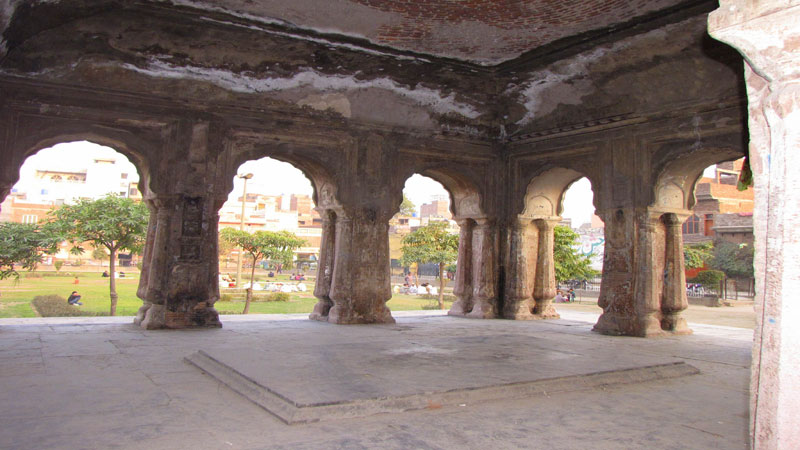
Like many other monuments of Mughal era this place was also plundered during the Sikh rule. The marble and other precious stones were removed and bricks were stolen by brick sellers. For some time, the tomb structures came under possession of Sheikh Imam-ud-Din who removed a large number of black stone slabs from the main podium on which the baradari stands and used them in his haveli. By the time of Maharaja Ranjit Singh, the structure was in ruins but had retained some beauty.
Having found it without an owner, Raja Suchet Singh occupied it, repaired the surrounding walls, and planted a garden in its grounds. During his life-time, the place was known as Raja Suchet Singh’s Bagh. During the British rule, it was put on auction and was bought by Nawab Ali Raza Khan Qazilbaksh for 2200 rupees.
Nadira Begum Tomb
Nadira Begum was the wife of Dara Shikoh, the eldest son of Shah Jahan and heir-apparent to his throne. In 1657 a power struggle broke out between Dara Shikoh and his three brothers over succession to the throne after Shah Jahan fell ill. Initially, fate seemed to favor Dara Shikoh. He prevailed in battle against his brother Shah Shuja and gained signifiant support from his father, who recovered enough to assist Dara Shikoh in his bid for power. However, father and son could not overcome the combined strength of his two other brothers, Aurangzeb and Murad.
Dara Shikoh and his wife attempted to flee to the west and south, but they were betrayed by Malik Jiwan, a Baluch cheiftain, who turned them over to Aurangzeb's army in June, 1659. Nadira died several months later prior to the assassination of her husband on August 30, 1659.
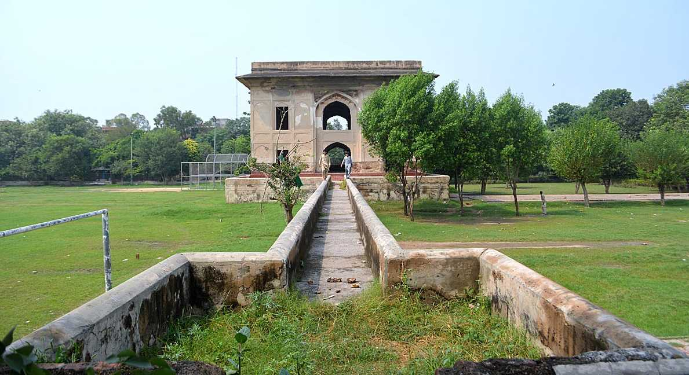
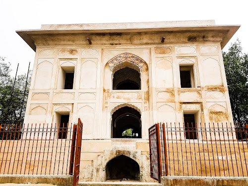
History of Site/ Monument: - The 17th century A.D. tomb is associated with Nadira Begum who was wife of Prince Dara Shikoh, the eldest son of 5th Mughal Emperor Shahjahan. Dara Shikoh also remained governor of Lahore during 1640s. At the time of his wife Nadira Begum’s death, Dara Shikoh was on run after losing battle for kingship against his younger brother Aurangzeb. It was during that hard journey the Nadira Begum died of exhaustion and dysentery in 1659 A.D. Her body was sent to Lahore and buried in the close proximity of Dara Shikoh’s spiritual guide, the saint Mian Mir.
Decorative motives/ important features: - The tomb is square and lies in the center of a big tank approached by a cause way on south. According to British period historians the tank was marked with pavilions, while lofty gateways provided access from the north and south through causeway. The gateways are no longer extant but most of the causeway can still be seen. Constructed with massive masonry, the two storey structure with its 44 feet wide square plan form, presents a rather solid appearance. Its four sides are punctured by central, deep cusped arch openings flanked by square headed apertures. The top of the building is encircled with a deep Chajja, 14 feet wide central chamber, an irregular octagon is surrounded by an ambulatory in the form of vestibules. Although no - is surviving of the external façade but traces of glazed tiles are evident in the first floor interior. The use of Qalib Kari/Ghalib Kari for roofs and vaults, a popular way for spanning the transitional spaces, is also employed internally, with good effect.
Nau Nihal Singh Haveli
The word "Haveli" is used to refer to mansions in India and Pakistan. The word is derived from the Persian word "hawli", meaning "an enclosed place". Havelis typically were built by wealthy aristocrats to house themselves and their extended families, and were often constructed several stories high with one or more courtyards in the interior.
The haveli of Nau Nihal Singh is perhaps the grandest of the surviving havelis in Lahore. It is rectangular in plan and comprises two levels wrapped around a central courtyard.
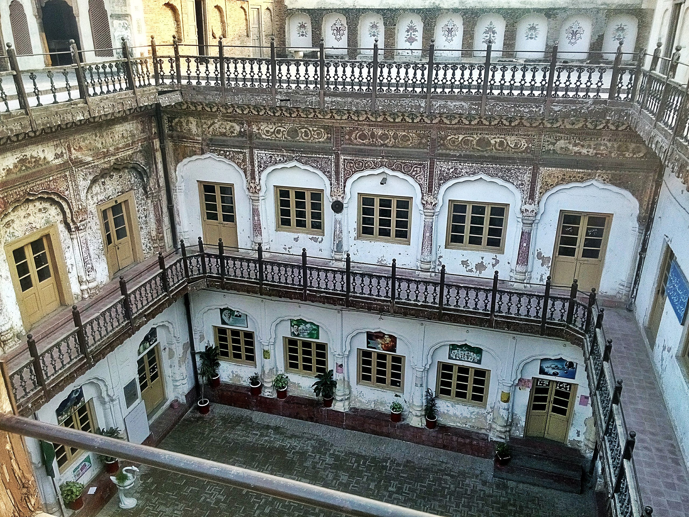
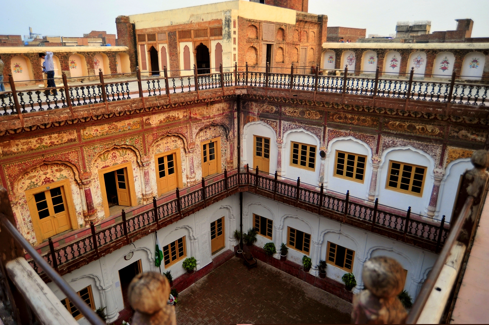
A tower at the northwest corner rises two additional stories and provides a panoramic view of Lahore from its roof. As the west side of the building includes the main entrance from the street, the tower is architecturally integrated with the first and second levels to present an eye-catching facade repleat with projecting fenestration and colorful surface detail.
The patron of the haveli, Nau Nihal Singh, reined as Maharaja of the Punjab for a mere month in October and early November, 1840. He had gained control of the Sikh Empire when his father, Kharak Singh, died from the effects of poisoning on November 5, 1840. The following day, when Nau Nihal was returning from his father's funeral, a building collapsed onto the path his entourage was travelling. Nau Nihal sustained minor head injuries and was knocked unconscious. His courtiers pulled him into a tent to ostensibly treat his injuries, but when the tent was opened some time later it was discovered that Nau Nihal was dead--his head having been smashed in. It is not known even today if this resulted from the initial accident or if assassins took advantage of the situation to remove Nau Nihal from power.
Nawankot Monuments
The so-called Nawankot Monuments are the remains of the eastern wall of the tomb garden of Zeb-un-Nisa, comprising two corner turrets and the east gate. The ensemble is difficult to distinguish in the crowded district, as the monuments are hemmed in on all sides by contemporary houses and roads. In the Mughal era, the three Nawankot monuments were linked together by a brick wall forming the eastern edge of the garden, and were in turn linked to two turrets that deliniated a square area of greenery with Zeb-un-Nisa's tomb at the center.
No trace of the western turrets and walls survive and the gardens have disappeared under urban sprawl. The Nawankot monuments themselves are in considerable danger from the effects of neglect, urban encroachment, vandalism and environmental stress.
The eastern gate is the most impressive of the monuments. It is a two story structure measuring 11.1 meters east-west and 13.0 meters north-south. It was once almost entirely covered by kashikari (enameled mosaic work) but large areas have worn away.
Neela Gumbad Mausoleum
Neela (or Nila) Gumbad means blue dome in Urdu. It is located in Anarkali, a famous shopping district in Lahore. Ironically, while the monument was once so renowned that the surrounding area became known by the same name, it is now challenging to spot amid the encroachment of commercial buildings that crowd the monument from all sides. From afar, only the blue dome itself provides evidence that a key landmark is located here.
This mausoleum is attributed to Sheikh Abdul Razzaq of Mecca. According to legend, the saint came to this region in the mid 16th century during the reign of Nāṣir-al-Dīn Humayun (r. 1530-40), the second Mughal emperor. Residing in Lahore, he became a disciple (mureed) of the famous saint Miran Muhammad Shah Mauj Darya Bukhari of the Suhrawardi lineage.
According to the newspaper Pakistan Today, the Sheikh survived until 1084 A.H. (i.e., 1673 C.E.), which improbably suggests he lived for 150 years or longer. Alternatively, the historian Kanhaiya Lal Hindi in his Urdu-language book "Tareekh-e-Lahore" provides the date 1086 A.H. (i.e., 1675-76 C.E.). More likely, the conflicting dates are evidence that even critical biographical details of the saint's life have been obscured by the passage of time.
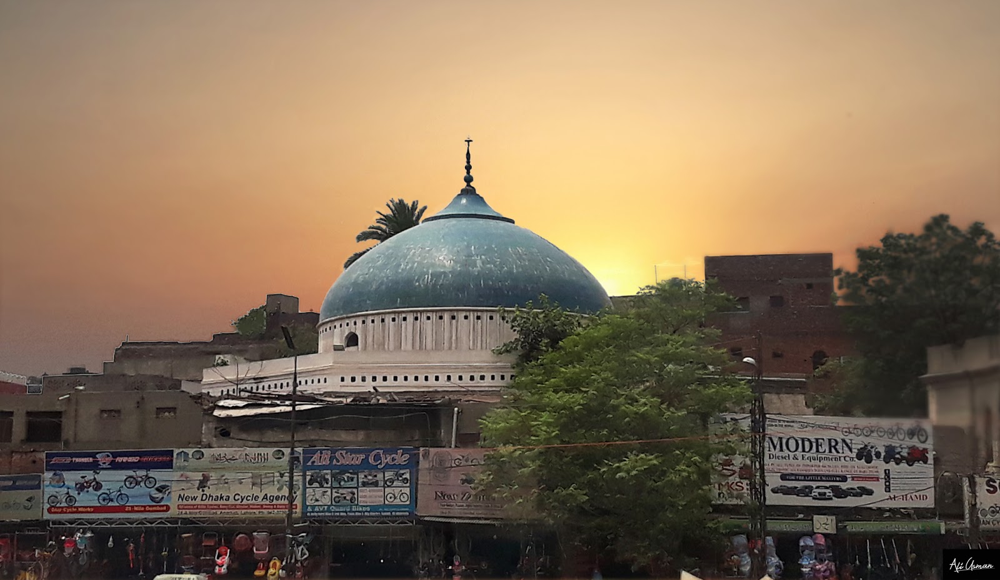
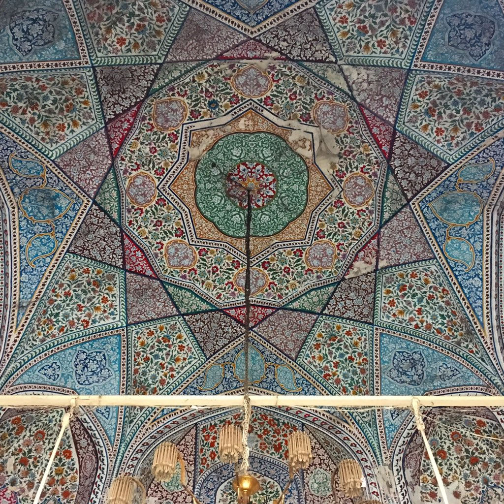
As was commonly the case, the mausoleum established for the Sheikh, possibly by the Mughal court itself, was also endowed with an adjacent mosque—which still survives (see images 16-27). Although its exterior appearance has lost much of its historical character, the interior vaulting retains brilliantly-painted fresco work depicting floral designs and geometric forms. In contrast, the wall surfaces of the triple-domed prayer hall are whitewashed with lime and furnished with modern marble wainscoting on the interior. East of the mosque, in the courtyard, there is a large well and an ablution pool.
The mosque and tomb form the nucleus of the surrounding hub of commercial activity bounded by Punjab University to the west, King Edward Medical college to the north, Ewing Hall to the east, and a dense residential district to the south. Presumably, much of the adjacent land was once set aside as a garden in the manner of Lahore's contemporary tombs, such as that of Dai Anga. The only evidence of this today is the two-story gateway to the northeast, now adorned with modern-day advertisements. Instead of providing entry into a pleasant tomb garden, it now serves as a portal to a hidden motorcycle parking lot.
Nur Jahan Tomb
Nur Jahan was the daughter of I'timad-ud-Daula, Jahangir's prime minister. Meaning "Light of the World", she was born in 1577 to Persian parents and was given the name Mehr-un-Nisaa. At the age of 17 she married Sher Afghan, a Mughal courtier. The marriage lasted thirteen years and resulted in the birth of one daughter, the only child Mehr-un-Nisaa was to ever have. After her husbands's death in 1607, Mehr-un-Nisaa entered Emperor Jahangir's harem as a lady-in-waiting to one of his stepmothers. She remained in the harem for four years until Jahangir happened to notice her during the Nowruz spring festival in March 1611. Infatuated by her beauty, he immediately proposed to her. She wedded in May of that year, becoming Jahangir's twentieth wife.
Jahangir's attention to matters of state was seriously compromised by his addiction to opium and alcohol. As he aged, he relied more and more on his close advisers to manage the empire's administration. Mehr-un-Nisaa--now known as Nur Jahan--used this as an opportunity to take power for herself and for many years became the de-facto ruler behind the throne. In an unusual step, Jahangir even allowed her to have coinage minted in her name--traditionally a prerogative of the emperor alone.
In 1626 the emperor was captured by rebels while on his way to Kashmir. Although Nur Jahan was able to secure his release, he died on October 28, 1627. In the struggle for succession that followed, Nur Jahan's own brother Asaf Khan sided against her and allied with his son-in-law Khurrum who was angling for the throne.
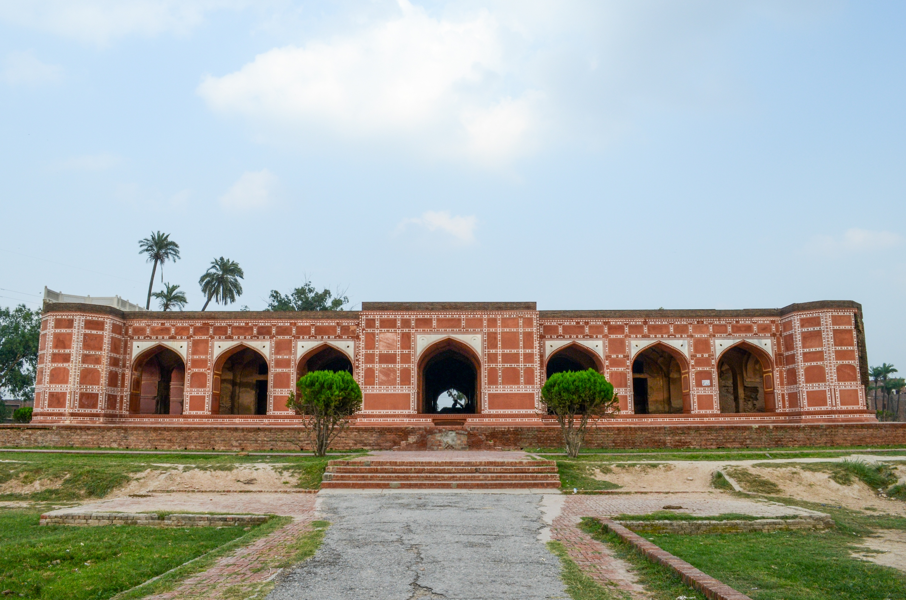
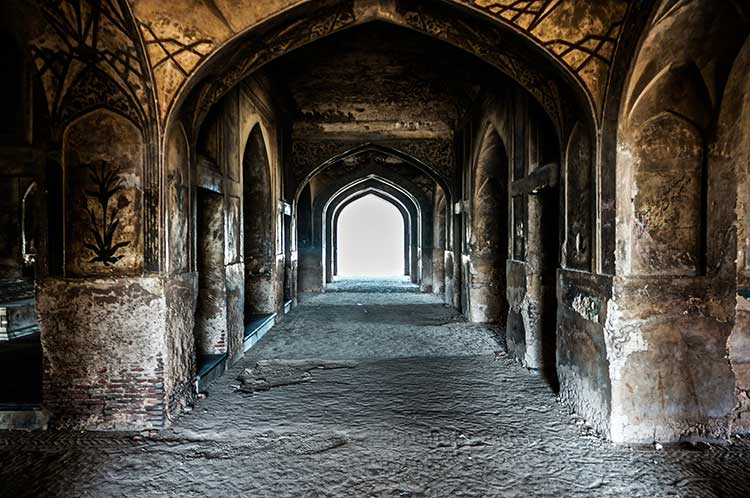
Khurrum succeeded and became the next Mughal Emperor with the reign name Shah Jahan. Nur Jahan lost favor and was confined to house arrest, but was not stripped of her finances. Throughout the remainder of her life she engaged in artisic activities, including composing Persian poems under the pen name Makhfi. Her greatest legacy, however, was the construction of the I'timad-ud-Daulah Tomb in honor of her father, which ranks second only to the Taj Mahal as the finest example of Mughal architecture in the subcontinent. She also oversaw the construction of her own tomb and was interred there when she died in 1645 at age 68.
Nur Jahan's tomb is stylistically similar to Jahangir's tomb, but is about half the size and lacks corner minarets. The tomb suffered substantial damage in the 19th century when its marble decoration was plundered for use in other monuments. The destruction extended even to the sarcophagus, which is no longer extant. The present cenotaph at the center of the tomb is a modern restoration. More recently, over-zealous rehabilitation of the tomb has resulted in the loss of some of the remaining fragments of original ornamentation.
Nusrat Khan Tomb
Nusrat Khan was a courtier who lived in the era of Shah Jahan. His tomb stands near the center of a large tract of land owned by Pakistan Railways and is impossible to access without security clearance. The overall design is very similar to the Khan-e-Jahan Bahadur Kokaltash Tomb which stands less than a kilometer to the south.
Among the earliest references to the tomb in the post-Mughal era may be found in the book "Tarikh-e-Lahore" (The History of Lahore) written by Rai Bahadur Kanhaiya Lal, an engineer who served in Lahore from 1850-85. In that work he records that the tomb had been surrounded by a vast garden with subsidiary buildings, much of which was already derelict or demolished by Lal's own era. He also records that the tomb was appropriated during Maharaja Singh's reign by General Auguste Court, a French soldier who provided technical assistance and training to the Sikh army. Court occupied the tomb as his principle residence and removed its grave, paving over the floor to create living space. Court continued to occupy the tomb until the assassination of Maharaja Sher Singh in September 1843, whereupon he fled to Firozpur in British territory. In 1844 he returned to France with his Punjabi wife and children, living out the rest of his days in Paris until his death in 1880.
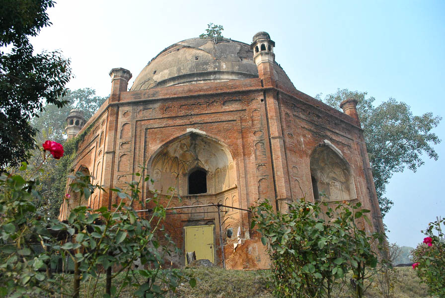
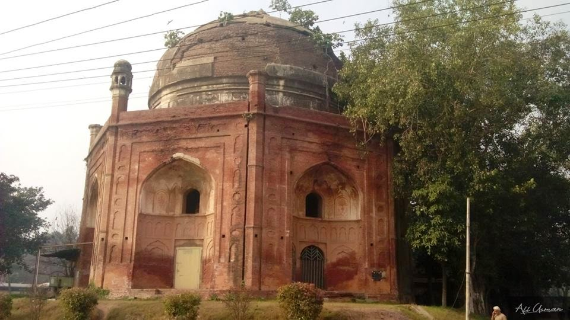
As per historic accounts the tomb is a massive structure, built entirely of small Lahori bricks without the use of stone or Kashi Kari. The octagonal mausoleum stands in the centre of a platform of octagonal shape which is now covered with grass and one can hardly make out the existence of the platform. The building has an ornamental niche decoration on its façade and pigeon-holes in a schematic way on its dome. The double shell dome is raised over a circular drum. There is a clear evidence of tendency towards the evolution of a bulbous dome. The monotony of the circular drum is broken by rectangular panels set back slightly. On the eastern side, the drum has been pierced with a small window giving an entry to the cavity between the two shells.
Historic records tell us that the interior was decorated with paintings of different colors but unfortunately now has been paint-washed in the traditional colors of the Pakistan Railways, green and yellow and this has damaged the original paint work inside the monument. I wonder how could this be done to a monument when it is a protected one! Most of the arched entrances have been closed up and metal posts have been used to support a tin roof over a portion of the first storey.
Tomb of Zaib Un Nisa
There are graves of unknown persons in the tomb but popularly associated with princess Zaib-un-Nisa, the eldest and most celebrated daughter of the 6th Mughal Emperor, Aurangzeb. It is also said that this tomb was built by her in 1669 A.D. in the midst of a beautiful garden.
The mausoleum building today is without its decorative features and elements. Historical accounts refer its devastation to Ranjit Singh, who removed its costly materials for the construction of his summer house in Hazuri Bagh in front of Alamgiri Gate of Lahore Fort. Presently the entire structure is stable, surrounded by the houses and shops leaving a space to access the tomb from main road.
Supporting a unique dome, on square drum, curvilinear externally and hemispherical internally is the only example in Lahore. Each face of the square tomb consists of a central cusped arch flanked by cusped arch insets and low height doorways, through which the internal chamber, containing two unmarked graves, is visible. The tomb building is constructed on a raised brick platform. A portion of the original tessellated floor of white and black marble and Sang-e-Badal is still survived. The existing patches of the flooring are exactly similar to that of the veranda in Jahangir’s tomb in Shahdara near Lahore.

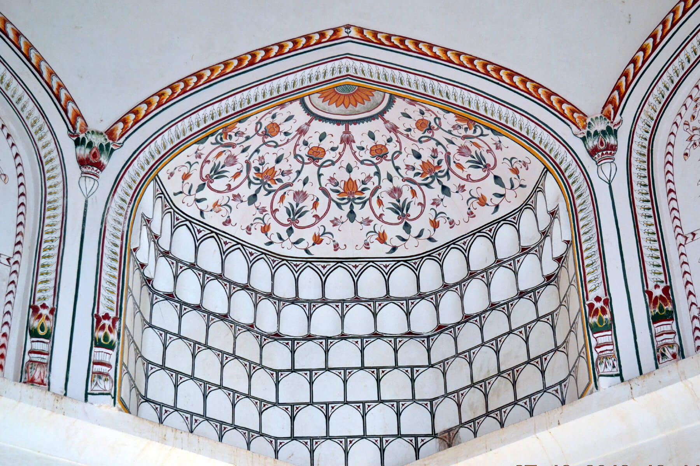
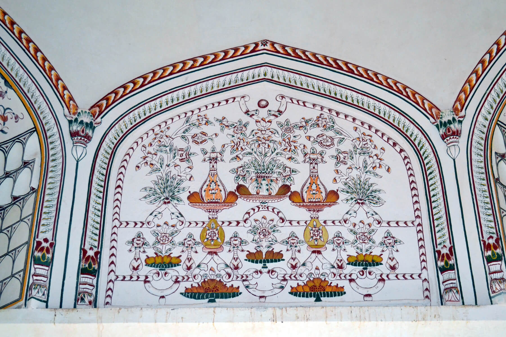
Zeb-un-Nisa, meaning "most beautiful of all women", was a daughter of Emperor Aurangzeb who lived from 1637 to 1702. She gained renowned for her Sufi faith and passionate interest in poetry. However, it is not known if this in fact her tomb. Some sources indicate that she died in Delhi and is buried outside the Kabuli gate. If this is true, another candidate for the tomb's occupant is Mian Bai Fakhrunnisa (Pride of Women), a favored female attendent of Zeb-un-Nisa who was given the Chauburji garden by her patron.
Supporting a unique dome, on square drum, curvilinear externally and hemispherical internally is the only example in Lahore. Each face of the square tomb consists of a central cusped arch flanked by cusped arch insets and low height doorways, through which the internal chamber, containing two unmarked graves, is visible. The tomb building is constructed on a raised brick platform. A portion of the original tessellated floor of white and black marble and Sang-e-Badal is still survived. The existing patches of the flooring are exactly similar to that of the veranda in Jahangir’s tomb in Shahdara near Lahore.
Haveli Mubarak Begum
During the rule of Muhammad Shah, three amirs namely Bahadur Ali, Nadir Ali, and Babur Ali constructed a haveli in Mochi Gate area. Coinciding with its completion Bahadur Ali was blessed with a son and thus the haveli was named Mubarak Haveli. Prince Shah Shuja ul-Mulk was made to stay at this haveli by Ranjeet Singh, who later forced the prince to surrender Koh-i-Noor to him.
On Safar 20, a chehlum procession – forty days after Hazrat Imam Hussain’s (RA) martyrdom – makes its way from Haveli Alif Shaheeyan in Mochi Gate, ending at Karbala Gamay Shah. The mourning ends on the 8th of Rabiul Awal with a procession that originates from an imambargah in Islampura, concluding at Karbala Gamay Shah. Another procession to commemorate the martyrdom of Hazrat Imam Ali (RA) on the 21st of Ramadan, which starts from Mubarak Haveli, also concludes at Karbala Gamay Shah, making it the final destination of all mourning processions in the city.
In Lahore, the traditional Tazia Alam procession was held from Mubarak Haveli inside Mochi Gate early in the morning and it culminated at Karbala Gamay Shah in the evening after passing through its traditional route. The route of the procession included Imambargah Ghulam Ali Shah, Chowk Nawab Sahab, Mochi Gate, Lal Khoo, Fazal Haveli, Takia Nathay Shah, Koocha Shian, Chuhatta Mufti Baqar, Old Kotwali, Kashmiri Bazaar, Dabbi Bazaar, Sunehri Masjid, Paniwala Talab, Chowk Nogaza, Chowk Tarannum Cinema, Chowk Tibbi, Bazaar Hakeeman, Chowk Novelty, Mohalla Jogian, Oonchi Masjid and Bhaati Gate.
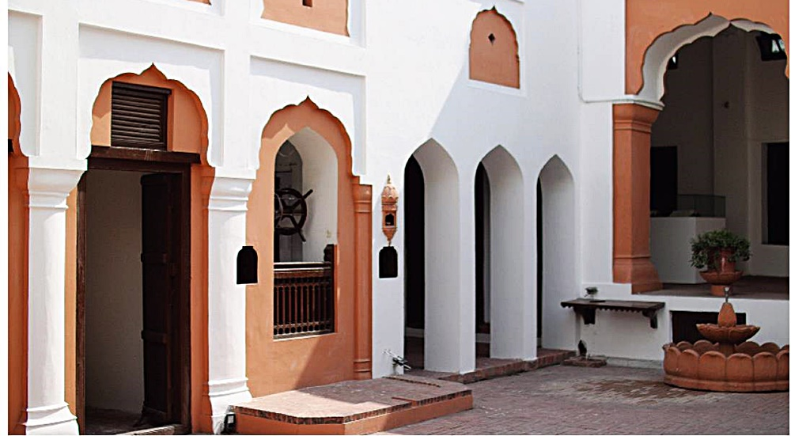
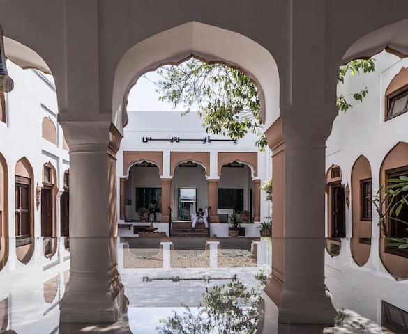
On the immediate right of the gate, there exists Mochi Bagh which is one of the major places for political get together in Lahore. Many political, processions and gatherings take place here. Dried fruit markets, kites shops and that of fireworks are the splendor of this historical gate. Fazal Sweet House is the famous sweet shop of the area. Besides, Kabab of this particular gate are also unbeatable. The gate is also a prominent roadway for some reputed Havelis of the Mughal Empire. They include Mubarak Haveli, Nisar Haveli and Laal Haveli etcetera. A number of Imam Bargahs (sacred place of Shia sect) are also located in different Havelis. A big mourning procession appears from Nisar Haveli every year on 10th of Moharam. “Das Kulcha with Lonchara” is the mouthwatering breakfast prepared inside the gate from decades.
According to a legend it is named after Moti, a guard of the gate during the Mughal era, who guarded and looked after the gate all his life. The most likely origin of its name, however, seems to be from the word Morchi, which means trench soldier. The Governor’s “Piada” units were stationed here during the pre-Mughal dynasty rule. This is further borne by the fact that the different streets (Mohalla’s) which still bear their old names are the Mohalla Teer-garan (arrow craftsmen), Mohalla Kaman-garan (bow craftsmen). The bazaar around the Mochi gate is renowned for its shops of Dried fruit, kites and fireworks Further inside is the Mohalla Shia, where the traditional Shia (Islamic sect)of Lahore still gather annually, at Moharram (first lunar month of the Islamic calendar) to carry out the Majaalis (Shia religious gatherings) and Maatum (self chest beating)to commemorate the martyrdom of Imam Hussain, the grandson of the Islamic prophet Muhammad. A number of Imaam Bargahs in the form of Haveli’s are situated here. Apart from their religious significance, some are a masterpiece depicting the architecture of their times. Mubarak Haveli, Nisar Haveli and Laal Haveli are, but a few examples. A Kebab Shop, a sweet mart and an Old Khoo (water well) are some of the well known features of Mohalla Shia.In front of the Laal Haveli is the Mochi Baagh. This, until recently, was a lush green patch with shady trees, it is barren now due to its landscaping to become a “speaker’s corner” in the light of its history of it having numerous renowned political leaders addressing the crowds at this place.
Sunehri Masjid
The Sunehri Masjid is a relative latecomer to Lahore's traditional cityscape, having been built in 1753 during the waning years of the Mughal empire by Nawab Bhikari Khan, the Deputy of Lahore during the tenure of Governor Mir Mu'in al-Mulk Mir Munoo. It stands on a small plot of land where one street diverges into two. When Nawab Bhikari Khan acquired the property, it was a vacant parcel of land at the chowk (square) of Kashmiri Bazaar. He was required to obtain a special fatwa from Muslim scholars to construct the mosque, as the local authorities has been concerned that the construction of a building in the square would interrupt the flow of traffic.
The pre-eminent architectural historian Kamil Khan Mumtaz is highly critical of the design, writing:
"On close inspection the corruption of Mughal forms is revealed in every detail. The bulbous Mughal domes are now exaggerated into the form of grotesque vegetables capped with slender drooping leaves. The merlons have become naga hoods, and the column stalks growing out of cabbages that blossom into life-like lotuses."
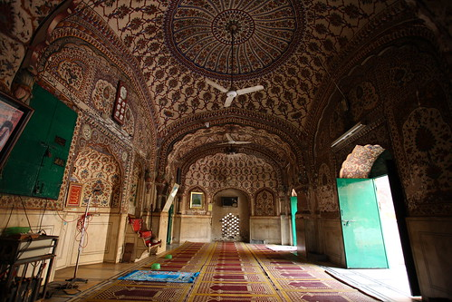
Unlike many of the beautiful and iconic mosques of Lahore, Sunehri Masjid was built during the decline of the Mughal Empire in 1753, twelve years before the Sikhs invaded the city. It was made by Nawab Bukhari Khan, who was Lahore’s deputy governor during the reign of Muhammad Shah (1719-1748). At the time, local Hindu and Sikh businessmen and the religious Muslim community objected to the construction of a mosque in what was already a tight-knit and congested part of the Walled City. The ‘mullahs (men versed in Islamic text and law)’ dubbed this decision as un-Islamic and against the community’s wishes.
Ever the diplomat, Nawab Bukhari, found a solution that appeased the disgruntled parties. The Nawab promised that the traders would not have to pay donations to the mosque, and that there would be space on the ground floor for shops to operate. Also, the building itself was small and meant to be constructed on a vacant piece of land, which would not interrupt the bazaar’s daily business. Once the traders were satisfied, the Nawab asked them to convince the mullahs to issue a ‘fatwa (religious decree)’ welcoming the creation of the mosque.
Wazir Khan Baradari
This baradari (literally, 12-door pavilion) originally served as the centerpiece of the Nakhlia Garden built by Wazir Khan, a benefactor of numerous buildings throughout Lahore including the mosque and hammam (bath house) which bear his name. It is among the finest of such monuments in the city, having been incorporated into the grounds of the Punjab Public Library as early as 1860, where it serves as a reading room. During the 19th and early 20th centuries it also served as a museum and as the Settlement and Telegraph Office under the British.
The square edifice known as Wazir Khan’s Baradari, is a beautiful specimen of civic architecture belonging to the Mughal style of Shah Jahan’s days. Built in about 1635 A.D by Hakim Shaikh Ilumddin Ansari, entitled Wazir Khan, a Minister and Governor of the Punjab during the reign of Emperor Shah Jahan (1628-58 A.D). The existing building stands at the back of the Lahore Museum, now isolated from its original garden environment.
The ‘Baradari’ has twelve arched openings, three on each side, and adorned with four corner cupolas. The main chamber is surrounded by four “Peash-e-Salans” and was once crowned by a high dome which has disappeared since long. The interior was originally decorated with fresco paneling dome in multicolours, producing a pleasing effect in harmony with the picturesque surroundings of a spacious “date garden” called ‘Nakhliya” which has since disappeared.
During the Sikh period, it became a part of their Cantonment. It continued to serve as soldier’s quarters during the British period till the cantonment was shifted from Lahore. It was then used as Settlement and Telegraph Office and later on, remained part of the Museum for sometime. It was also used to house a part of the Punjab Public Library, Lahore
Oonchi Masjid
The Oonchi Mosque, or Oonchi Masjid is a Mughal-era mosque located along the Hakiman Bazaar, near the Bhati Gate which leads into the Walled City of Lahore, in Pakistan. The mosque may date from the reign of the Emperor Akbar. It has been extensively renovated throughout its history, resulting in little of the original mosque's decorative elements being preserved.
The mosque's name means "High Mosque," and refers to the fact that the mosque was built upon a high platform. Unlike the grand Mughal mosques such as Wazir Khan Mosque and Badshahi Mosque, no inscription exists which signifies the year of the mosque's construction.
The mosque is often said to date from the reign of Akbar, however, evidence also suggest that the mosque may have been built later, during the reign of Aurangzeb. It is said that the spiritual master of the great Punjabi poet and Sufi saint, Baba Bulleh Shah, Shah Inayat Qadiri, was Imam of the mosque. Mulla Abdul Qadir Badayuni mentions in his writing the mosque as a platform during the reign of Akbar.
The mosque features three archways and a small ablution pool for the performance of the Islamic ritual washing. Two niches along the mosque's western wall bear Quranic verses, while a third bears the name of Abul Fateh Jalal-ud-Din Muhammad Akbar Badshah Ghazi.
Tomb of Asif Khan
The tomb of Asif Jah is located opposite to the tomb of Emperor Jahangir. Mirza Abul Hasan Asif Jah (also called Asaf Khan) was the brother of Empress Nur Jahan, who was a beloved wife of Jahangir, and the father of Arjmand Banu Begum( Mumtaz Mahal), the “Lady Of Taj” who is buried in India at Agra in Taj Mahal. Under the Shah Jahan, Asaf Jah was the Prime Minister of India and the Viceroy of the Punjab. He also owned a palace in Lahore, which was later called ‘Asaf Jah’s Haveli’.
Asaf Jah died in 1641 AD and his tomb was built by the order of Emperor Shah Jahan who was his son-in-law. Once a grand edifice, the tomb is octagonal in structure with a high bulbous dome and echoes the architectural character of Ali Mardan Khan’s tomb. I am sorry to say that now a days the condition of the tomb is very miserable. We should love with our precious heritage assets.
The interior was decorated with very bold stucco tracery. The important feature of the tomb is use of Kashi Kari is qalib design, a feature for the first time used in Lahore along with mosque of Dai Anga. In addition, the inner walls of pishtaqs were decorated with cuerda seca tiles, a feature used for the first time in any Mughal empire. The color palette in the tomb of Asaf Khan has shifted compared to Jahangir’s tomb, with the formerly dominant blue yielding mainly to orange and yellow with some black white and green also occasionally used as a ground. The floral designs are completely symmetrical. The palette was chosen to match the cuerda seca tiles on the inner walls of pishtaqs. They all have a yellow ground, with mainly orange stems and flowers, also some green and dark blue is found too. The attempt to depict the upper and lower sides of the leaves is shown both in two shades of green and in dark blue and orange. Such tile work was frequently used in the Timurid and Safavid architecture.
Mirza Abdul Hassan, Itiqab Khan or Asif Khan (III) himself was the stuff of legend, brother of Empress Noor Jahan and father of Mumtaz Mahal ( the title given to Arjumand Bano) the lady of Taj and favorite wife of Shahjahan. Asif Khan ascended to an unprecedented rank of 9000 personnel and 9000 horses, a rank once reserved only for princes. Emperor Shahjahan appointed him Sippah-Salar, (commander-in-chief) and also granted him the title of Yameen-ud Daula. Asif Khan was not even instrumental in struggle of Shahjahan for securing Mughal throne but also became famous for his taste for art and architecture. He died in November, 1641 A.D and buried in this mausoleum which was built by Emperor Shahjahan in four years at cost of three lakhs rupees. Asif Khan was reputed to have left a colossal fortune, his house in Lahore (Choona Mandi Women College) alone having cost of 20 lakh rupees at the time of its construction. The entire compound, garden and tomb, is enclosed by a brick wall finished with lime plaster and approached through an imposing gate on south.The tomb is not a part of the Jahangir’s tomb complex but at present its entrance is from Akbari-Serai. The all original entrances of Chahar-Bagh Rauza compound were blocked in recent times. As soon as one enters in the compound, he gets struck by the high bulbous dome of the octagonal monument, raised on a large octagonal podium with its recessed adcoves, the very character of Ali Mardan’s tomb. This is one of the much ravaged monuments during the Sikh period but still impressive because of the expansiveness of the garden around it. The spacious garden once set with reservoirs, fountains and beautiful walkways (khayabans).
Tomb of Anarkali
Anarkali tomb is one of the earliest surviving and most significant buildings of the Mughal period. Not only a brilliantly structured octagonal building also it is a remarkable memorial of the love-legend about the Shahzadah Salim (later famous Mughal Emperor, Jahangir) and girl Anarkali (pomegranate kernel). The legendary story is variously told, but the pith of the legend is that the poor girl Anarkali was executed for her amorous folly in 1599. Mughal sources are silent about Anarkali. European travelers of the time mentioned the popular gossip rife at the time, referred Anarkali as Akbar’s (Jahangir, s father) most beloved wife of the harem. Anarkali whose name was Sharf-un- Nisa or Nadira Begaum found giving a return smile to the prince by the emperor in the mirrors of his palace.
Suspecting an intrigue or worse, Akbar ordered Anarkali to be interred alive. Accordingly, she was placed in an upright position and buried alive in a masonry wall, brick by brick. The prince Salim (Jahangir) after becoming the Emperor in 1615 raised a beautiful structure over her grave after 16 years of her death. Over the last couple of hundred years, the tomb has been put to several uses. In the first half of 19th century it served as the residence of Ranjit Singh’s French general Jean Baptiste Ventura’s Armenian wife. From 1847 it was used as offices for clerical staff of the first British Resident, Henry Lawrence. From 1851 it was the venue for divine service; while in early 1857 it was consecrated as St. James Church, later being declared a Pro-Cathedral. However it is this tomb gifted the name Anarkali to the whole area when the British first set up cantonment here
Present Condition (Exterior & Interior)
Today the monument seems like a simple, whitewashed massive brick structure, without any prominent decorative features. The tomb once set off as the centerpiece of a beautifully laid out garden setting, is at present hemmed in by structures surrounding it. The building of the tomb is in a good state of conservation and maintenance.
Decorative motives/ important features
With a big and bold overall look the tomb stands within the enclosure of Punjab Civil Secretariat. The tomb is laid on popular Mughal architectural format using an octagonal plan with alternate sides measuring 44 feet and 30 feet respectively. It is unique in its utilization of semi-octagonal towers dominating each corner, rising well above the walls and terminated with cupolas over pavilion- like kiosks. A low pitched double dome spans the central chamber and is carried on a drum or neck. The marble cenotaph, dislocated from its proper place, is elaborately carved with delicate floral and tendril designs. The calligraphy is in Nastaliq, boldly carved, but lacks the uniformity of pen. On the top and three sides are inscribed 99 attributes of Allah. Besides, the other two inscriptions give the date of death of Anarkali both in figures and words as 1008 A.H/ 1599 A.D and the date of the construction of the tomb as 1024 A.H/1615 A.D. There is no mention of the person buried in this mausoleum.
Laal Haveli (Haveli of Mai Daru)
Lal Haveli is a residential structure that has best preserved cut and chased brick work with plaster moldings on a fair faced brick ground having exquisite wooden jharokas on the three principal floors. The brick work has been kept painted over the decades with a coat of hurmuchi, or red ochre paint, which gave the house its name.
The tall tales of the crumbling ‘Mai Daru de Haveli’ are amazing. There is a basement, and then there is a staircase that moves further down.
The concept of haveli goes back to the ancient times and exact time period when these started building cannot be mentioned. Most of the Havelis of the sub-continent were influenced by Islamic, Persian, Turkish, Sikh and Hindu architecture. If we talk about the structure and built of a haveli, mostly it has a courtyard with fountains, huge kitchens, balconies, verandas, and several stories including mezzanines, closely knitted rooms and basements. In ancient Havelis, the concept of attached bath is not seen. The baths and washrooms were separated from the main living area within the Haveli and that was for hygiene purposes.
Also, separate areas for prayer rooms are seen for Muslims and temples for Hindus. Basically, the Havelis in this region belonged to Muslims, Sikhs and Hindus. What we see today in Walled City of Lahore are mostly the Sikh Havelis as according to historic references during the British Rule, while the reconstruction and uplifting of the city was in process much of the Mughal architecture was damaged and later on some met ill fate because of severe floods. The Sikhs rebuilt the Havelis on their own designs, but still adopted certain features of the Mughal Architecture. The most interesting thing you would see in the Havelis of Walled City is that several families are residing in each Haveli. There are some huge Havelis where 17 to 30 familie live together at a time.
Lal Haveli is on the eastern side of the Lohari Mandi Bazaar, north of Chowk Lohari Mandi, the second house on the right as one enters the bazaar. This Haveli is a complex of four properties. As you go inside the narrow winding street of this bazaar, you will be stunned to see this red building with prominent jharokas and balconies. There is no other similar Haveli inside the Walled City; it’s the only one of this type. The major features are the jharokas opening onto the bazaar and lined with decorative mirror-work.
This breathtaking haveli is a masterpiece hidden inside the narrow bazaar. It is not a tourist spot but the local shopkeeper has a key to this haveli and he opens it up for any visitor who wants to see the magic of it.